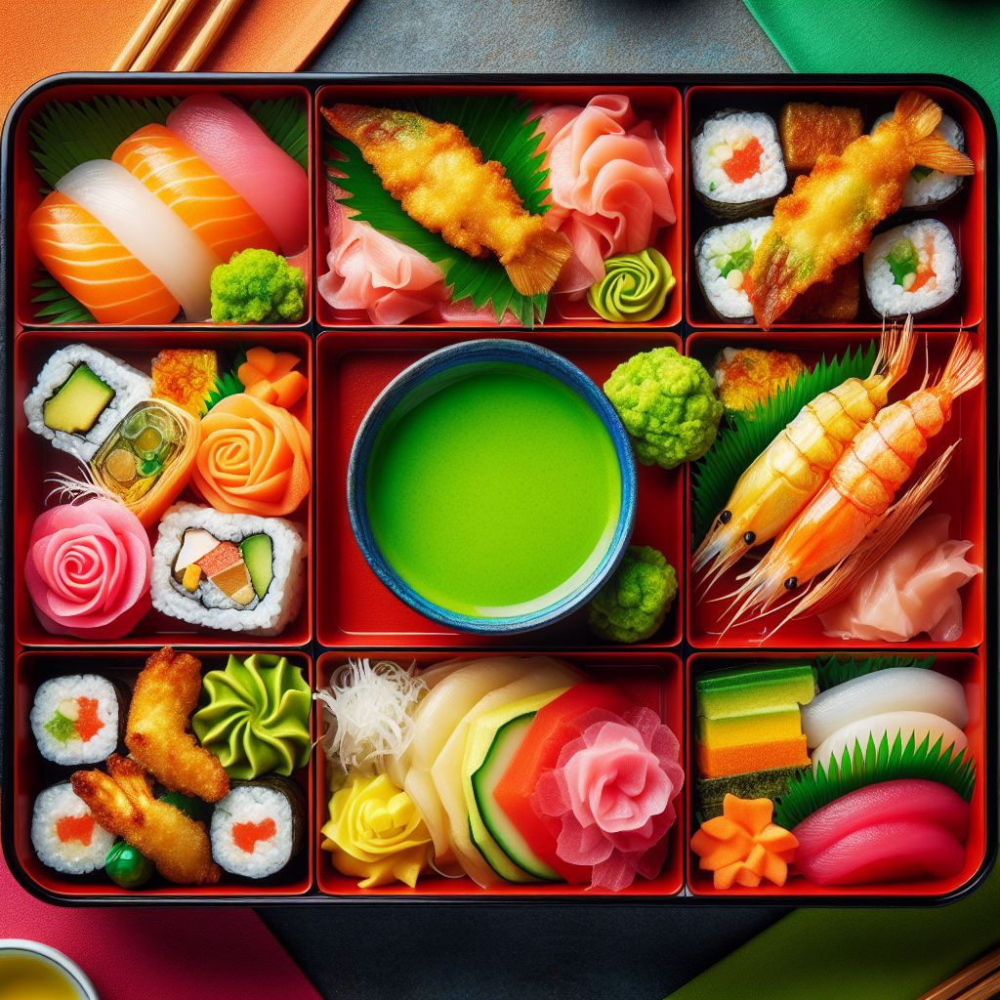

Home
Receitas
Receitas
A lista de todas nossas deleciosas receitas.
Okonomiyaki
Uma panqueca japonesa recheada com uma variedade de ingredientes deliciosos, como repolho, bacon, camarão e molho okonomiyaki, resultando em uma explosão de sabores e texturas em cada garfada. Esta iguaria é uma celebração da cozinha caseira japonesa.
Acessar Receita
Sashimi
Sashimi é uma iguaria japonesa composta por fatias finas de peixe cru fresco, habilmente cortadas e servidas sem arroz. Celebrado pela sua frescura e simplicidade, o sashimi destaca os sabores naturais do peixe, proporcionando uma experiência culinária.
Acessar Receita
Udon
Udon é uma variedade de macarrão japonês, feito tradicionalmente com farinha de trigo e água. Reconhecido por sua textura macia e sabor suave, o udon é frequentemente servido em caldo quente à base de dashi, acompanhado por ingredientes como tempurá.
Acessar Receita
Hot Roll
Hot roll é um tipo de sushi popular que consiste em um rolo de arroz coberto com alga nori e recheado com ingredientes como peixe cru ou cozido, vegetais e molhos. É então grelhado .
Acessar Receita
Barca de Sushi
A barca de sushi é uma apresentação generosa e visualmente impressionante de uma variedade de sushi e sashimi, servidos em uma embarcação de madeira ou plástico em forma de barco.
Acessar Receita
Gyudon
Gyudon é um prato japonês clássico feito com fatias finas de carne de bovino (geralmente carne de contrafilé), cebolas fatiadas e marinadas, cozidas em um molho.
Acessar Receita
OrikaCheef é um lugar seguro.
Quick Links
Home
Receitas
Quem somos
Contatos
Contatos
Av. Joaquim Bôer, 733 - Jardim Luciane, Americana - SP, 13477-360
contato@orikacheff.com.br
Instagram
